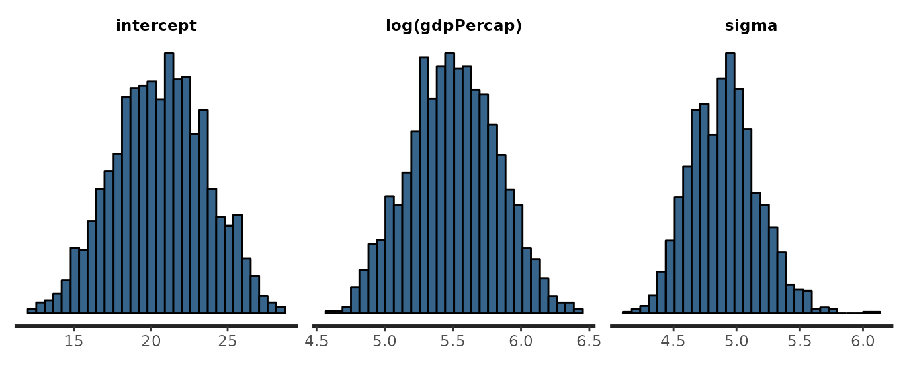
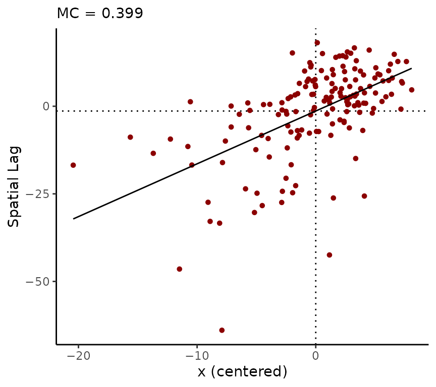
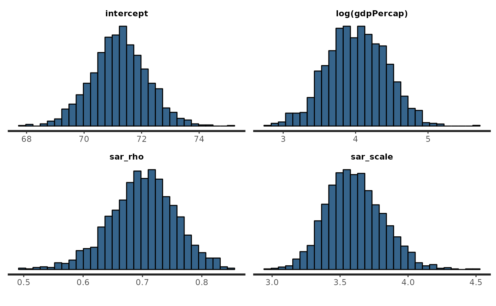

vignettes/spatial-analysis.Rmd
spatial-analysis.RmdThis vignette was first publisehd as a post on r-spatial.org.
This vignette introduces the geostan R package for spatial analysis. The package is mainly oriented towards areal data, although some models may also be used for other spatial data types, such as network data. The package implements the spatial error/simultaneous spatial autoregressive (SAR) model, conditional autoregressive (CAR) model, and eigenvector spatial filter (ESF) models for spatial regression. A version of ESF modelling also appears in the ecology literature as principle coordinate analysis of neighbor matrices (PCNM) (Griffith and Peres-Neto 2006).
geostan also supports the application of the above regression methods to hierarchical models for count data, as is common in analyses of disease incidence or mortality in small areas (‘disease mapping’). Additional features of the software include models for sampling/measurement error in covariates and methods for handling censored count data, such as when mortality or disease counts have been censored for privacy. The models were built using the Stan modeling language, so all inference is completed using Markov chain Monte Carlo (MCMC) sampling (Stan Development Team 2023; Gabry et al. 2024). The spatial autoregressive models use custom-built Stan functions that speed up MCMC sampling considerably (Donegan 2021).
This post will walk through an example analysis using international data on life expectancy and per capita GDP. Package vignettes can be found with the online documentation, including an introduction to spatial weights matrices, exploratory spatial data analysis, spatial measurement error models, raster regression, and using geostan to build custom spatial models with Stan. A paper in the Journal of Open Source Software reports these and other features and provides the recommended citation when using geostan (Donegan 2022).
geostan is currently on CRAN, although that may not always be the case. You can also install directly from geostan’s github repository.
You can install from the package github repository:
if (!require('devtools')) install.packages('devtools')
devtools::install_github("connordonegan/geostan")If you are using Windows and installing using install_github, you may need to install Rtools first. Rtools is not needed when installing from CRAN. You may also contact the author by e-mail for a pre-compiled version that you can use without Rtools.
If you are using Mac and installing with install_github then you may need to install Xcode Command Line Tools first.
To begin, load the geostan and sf packages into your R environment, as well as the world data:
The world data contains life expectancy and gross domestic product (GDP) per capita (presumably measured in current $US) for 161 countries as of 2014, gathered from the World Bank. The rest of this post is going to be structured around a bivariate analysis of these variables.
We are going to apply the Robinson map projection for the countries:
world <- st_transform(world, crs = 'ESRI:54030')At least a couple of the missing values can be filled in using World Bank data, so we will do that:
## https://data.worldbank.org
france <- grep("France", world$name_long)
world$gdpPercap[ france ] <- 43068
world$lifeExp[ france ] <- 82
norway <- grep("Norway", world$name_long)
world$gdpPercap[ norway ] <- 97666
world$lifeExp[ norway ] <- 82.1And we will also remove Antarctica:
world <- subset(world, name_long != "Antarctica")Mapping the variables shows the familiar geography of high-, middle-, and low-income countries and a similar geography of longevity:
# store geometry for countries
world_geom <- st_geometry(world)
# show two maps at once, with nice font
ogpar <- par(mfrow = c(2, 1),
mar = rep(0, 4))
# GDP per capita
pars <- map_pars(world$gdpPercap / 1e3)
plot(world_geom,
col = pars$col,
lwd = .2)
legend("bottomleft",
fill = pars$pal,
title = 'GDP per capita\n($1,000s)',
legend = pars$lbls,
bty = 'n'
)
rm(pars)
# life expectancy
pars <- map_pars(world$lifeExp)
plot(world_geom,
col = pars$col,
lwd = .2)
legend("left",
fill = pars$pal,
title = 'Life Expectancy',
legend = pars$lbls,
bty = 'n'
)Choropleth maps of GDP per capita and life expectancy.
par(ogpar)The map_pars function breaks the variables into quantiles and returns breaks, colors, labels for the maps; it can be found at the end of the post. There will be no discussion of substantive (non-statistical) issues here, for which one can consult any number of texts on global power and inequality (such as Birn, Pillay, and Holz’s Textbook of International Health or Paul Farmer’s Infections and Inequalities).
By conventional methods, the correlation coefficient for life expectancy and log GDP per capita is 0.81:
##
## Pearson's product-moment correlation
##
## data: log_x and y
## t = 17.394, df = 160, p-value < 2.2e-16
## alternative hypothesis: true correlation is not equal to 0
## 95 percent confidence interval:
## 0.7478143 0.8561778
## sample estimates:
## cor
## 0.8087528The conventional assessment is based on the proposition that we have 161 independent observations. The visible geography of the variables, and any level of social awareness, indicates that these are not independent observations. Rather, there are various functional regions of countries that share basic political-economic conditions. A lot, but not all, of the variation can be described as variation across continents and regions. We will want to account for this dependence using a spatial model (for background see Chun and Griffith 2012; Donegan 2024). The first step will be to construct a spatial weights matrix.
This section will illustrate use of two geostan functions for creating an revising a spatial weights matrix: shape2mat and edges. The shape2mat function may be helpful for some users but one can always do this using spdep or other methods, especially if shape2mat does not provide the exact method you’re looking for.
We are going to start by removing the 15 countries that are missing values:
## remove missing values
world <- subset(world, !is.na(gdpPercap) & !is.na(lifeExp))
## leaving 162 observations
nrow(world)## [1] 162Now we can apply the shape2mat function to obtain an adjacency matrix that encodes spatial adjacency relations for countries into a binary N-by-N matrix. The function uses spdep to find adjacency relations and returns results as a sparse matrix (using the Matrix package):
A <- shape2mat(world, "B", method = "rook")## Warning in spdep::poly2nb(shape, queen = queen, snap = snap): some observations have no neighbours;
## if this seems unexpected, try increasing the snap argument.## Warning in spdep::poly2nb(shape, queen = queen, snap = snap): neighbour object has 19 sub-graphs;
## if this sub-graph count seems unexpected, try increasing the snap argument.## Contiguity condition: rook## Number of neighbors per unit, summary:## Min. 1st Qu. Median Mean 3rd Qu. Max.
## 0.000 2.000 3.000 3.605 5.000 13.000##
## Spatial weights, summary:## Min. 1st Qu. Median Mean 3rd Qu. Max.
## 1 1 1 1 1 1Visualizing the connections in the matrix is important for uncovering unexpected results. geostan’s edges function converts the matrix into a list of nodes and edges that we can plot. For this we need to supply the function with the adjacency matrix, A, and the associated spatial object, world:
# edges with geometry
E <- edges(A, shape = world)
graph <- st_geometry(E)
ogpar <- par(mar = rep(0, 4))
# plot countries
plot(world_geom, lwd = .1)
# add graph nodes
plot(graph, add = TRUE, type = 'p')
# add graph edges
plot(graph, add = TRUE, type = 'l')
par(ogpar)This reveals quite a few unexpected results. French Guiana is stored in the world data as part of France (a multi-part polygon); this is correct of course but it leads to Brazil and Suriname being listed as neighbors of France, which is not sensible. Besides removing those connections, there are a number of island nations that we might want to connect to nearby places.
To connect Mozambique to Madagascar, we just replace the zeroes with ones in the slots that correspond to those countries. First we grab their index positions in the matrix:
And then we assign the correct slots in the matrix a value of 1 (or TRUE), remembering that the adjacency matrix is symmetric:
A[moz_idx, mad_idx] <- A[mad_idx, moz_idx] <- TRUEThis can become tedious but it is important. Before moving on, we will make a series of adjustments. This will be made a bit easier with this convenience function:
connect <- function(country_a, country_b,
names_vec = world$name_long, matrix = A, add = TRUE) {
stopifnot( country_a %in% names_vec )
stopifnot( country_b %in% names_vec )
a_idx <- which(names_vec == country_a)
b_idx <- which( names_vec == country_b)
matrix[a_idx, b_idx] <- matrix[b_idx, a_idx] <- add
return( matrix )
}The following are at least reasonable changes to make; they also ensure that every country has at least one neighbor:
A <- connect("Mozambique", "Madagascar")
A <- connect("Australia", "New Zealand")
A <- connect("Philippines", "Malaysia")
A <- connect("Japan", "Republic of Korea")
A <- connect("Fiji", "Vanuatu")
A <- connect("Solomon Islands", "Vanuatu")
A <- connect("Solomon Islands", "Papua New Guinea")
A <- connect("Australia", "Papua New Guinea")
A <- connect("Haiti", "Jamaica")
A <- connect("Bahamas", "United States")
A <- connect("Dominican Republic", "Puerto Rico")
A <- connect("Trinidad and Tobago", "Venezuela")
A <- connect("Sri Lanka", "India")
A <- connect("Cyprus", "Turkey")
A <- connect("Cyprus", "Lebanon")
A <- connect("Norway", "Iceland")
## remove connections between South American and France
A <- connect("Suriname", "France", add = FALSE)
A <- connect("Brazil", "France", add = FALSE)We should look at the revised adjacency matrix:
graph <- st_geometry( edges(A, shape = world) )
ogpar <- par(mar = rep(0, 4))
plot(world_geom, lwd = .1)
plot(graph, add = TRUE, type = 'p')
plot(graph, add = TRUE, type = 'l')
par(ogpar)Sometimes it can help to examine the edge list interactively using a proper geographic information system like QGIS. For those who are familiar with (non-R) GIS software, you can save the edges list as a GeoPackage and then open it up in your GIS to examine the connections ‘by hand’ with a base map or other data:
Fitting regression models with geostan is similar to using base R’s glm function: the user provides a model formula, data, and the model family or distribution. We can fit a normal linear model using the stan_glm function:
The iter argument will be discussed below; we used iter = 800 (lower than the default) to keep this demo running quickly. We can examine parameter estimates by printing to the console:
print(fit_lm)## Spatial Model Results
## Formula: lifeExp ~ log(gdpPercap)
## Likelihood: gaussian
## Link: identity
## Spatial method: none
## Observations: 162
##
## Inference for Stan model: foundation.
## 4 chains, each with iter=800; warmup=400; thin=1;
## post-warmup draws per chain=400, total post-warmup draws=1600.
##
## mean se_mean sd 2.5% 20% 50% 80% 97.5% n_eff
## intercept 20.604 0.138 2.999 14.821 18.030 20.689 23.256 26.317 470
## log(gdpPercap) 5.504 0.015 0.322 4.884 5.231 5.503 5.784 6.118 480
## sigma 4.904 0.010 0.269 4.429 4.668 4.905 5.115 5.465 750
## Rhat
## intercept 1.005
## log(gdpPercap) 1.005
## sigma 1.001
##
## Samples were drawn using NUTS(diag_e) at Mon Jul 14 14:15:19 2025.
## For each parameter, n_eff is a crude measure of effective sample size,
## and Rhat is the potential scale reduction factor on split chains (at
## convergence, Rhat=1).The output printed to the console provides a summary of the posterior probability distributions of the model parameters. The distributions can also be visualized using plot(fit_lm):
plot(fit_lm)## `stat_bin()` using `bins = 30`. Pick better value with `binwidth`.
The mean of the distribution is reported in the mean column. For those who are more familiar with concepts from sampling theory, the mean may be understood as the estimate of the parameter. Each distribution’s standard deviation is found in the sd column; this describes the width of the posterior distribution. The sd is analogous to the standard error of the estimate. The quantiles also summarize the width of the posterior distributions; the 2.5% and 97.5% values form a 95% credible interval for the parameter value.
The effective sample size (ESS), n_eff, tells us how many independent MCMC samples the inference is based on after adjusting for serial autocorrelation in the MCMC samples. This is an important quantity to pay attention to and generally one might like to see these numbers above 400 (or around 100 samples per MCMC chain). The standard error of the mean, se_mean, reports how much MCMC sampling error to expect in the mean (se_mean is calculated using n_eff). The R-hat statistic, Rhat, should always be very close to 1, preferably less than 1.01. The R-hat diagnostic tests that the MCMC chains are all depicting the same distribution. If they diverge from one another, it either means that you need to draw a higher number of MCMC samples (run the chains for longer) or that there is a problem fitting the model to your data.
By default, geostan models run four independent MCMC chains for 2,000 iterations each, half of which is discarded as warm-up. The number of iterations is controlled by the iter argument, the default being iter = 2e3. For some models this may be too low and you will want to increase this. Other times this might be more than is needed in which case you can reduce the computation time by using fewer iterations. What matters most is not your number of iterations but your ESS and R-hat statistics. When it comes to reporting results, it is generally best to use at least the default of four MCMC chains (chains = 4).
A number of familiar methods are available for working with geostan models including fitted, resid, and predict.
The fitted method returns a data.frame with summaries of the fitted values. The probability distribution for each fitted value is summarized by its posterior mean, standard deviation, and quantiles:
## mean sd 2.5% 20% 50% 80% 97.5%
## fitted[1] 70.22325 0.3958945 69.45245 69.88625 70.22963 70.55043 71.00769
## fitted[2] 63.45024 0.6101646 62.29326 62.91652 63.46281 63.97594 64.59482
## fitted[3] 79.33940 0.6008245 78.18550 78.82906 79.33627 79.84760 80.50778
## fitted[4] 80.36706 0.6477634 79.12126 79.81673 80.36413 80.91975 81.63142
## fitted[5] 76.02402 0.4701727 75.08544 75.62760 76.02202 76.42606 76.91284
## fitted[6] 67.87923 0.4426079 67.02744 67.50195 67.88025 68.25438 68.74189The resid method behaves similarly. Examining the Moran scatter plot using the residuals shows a moderate degree of positive SA as well as some skewness:
rdf <- resid(fit_lm)
moran_plot(rdf$mean, A)
Options for spatial regression models currently include conditional autoregressive (CAR), simultaneous autoregressive (SAR/spatial error), and eigenvector spatial filtering (ESF). For count data, common variations on the intrinsic autoregressive (ICAR) model are also available.
All of the spatial models require at least a spatial weights matrix as input. All additional requirements for data preparation are handled by geostan’s prep_ functions: prep_car_data, prep_icar_data, prep_sar_data.
The make_EV function is used to create Moran’s eigenvectors for ESF regression; if you want to create your own eigenvectors (say, following the PCNM method) you can provide those directly to the ESF model (see ?stan_esf).
For the CAR model, we always provide the binary adjacency matrix as input to prep_car_data. See the prep_car_data documentation for options. Here we will fit an intercept-only CAR model to the life expectancy data:
cars <- prep_car_data(A, quiet = TRUE)
fit_car <- stan_car(lifeExp ~ 1, data = world, car_parts = cars, iter = 800, quiet = TRUE)
print(fit_car)## Spatial Model Results
## Formula: lifeExp ~ 1
## Likelihood: auto_gaussian
## Link: identity
## Spatial method: CAR
## Residual Moran Coefficient: -0.3562562
## Observations: 162
##
## Inference for Stan model: foundation.
## 4 chains, each with iter=800; warmup=400; thin=1;
## post-warmup draws per chain=400, total post-warmup draws=1600.
##
## mean se_mean sd 2.5% 20% 50% 80% 97.5% n_eff Rhat
## intercept 70.004 0.106 2.954 63.824 67.821 69.985 72.144 75.824 771 1.003
## car_rho 0.981 0.000 0.011 0.955 0.973 0.983 0.990 0.996 821 1.004
## car_scale 7.838 0.015 0.466 7.008 7.446 7.809 8.230 8.835 932 0.999
##
## Samples were drawn using NUTS(diag_e) at Mon Jul 14 14:15:27 2025.
## For each parameter, n_eff is a crude measure of effective sample size,
## and Rhat is the potential scale reduction factor on split chains (at
## convergence, Rhat=1).Notice that using iter = 1000 was more than adequate for inference in this case.
The CAR model has a spatial dependence parameter car_rho. This parameter does not have an interpretation similar to a correlation coefficient, and it is often near 1; this is not a problem unless one misinterprets it or desires a value similar to the correlation coefficient. The spatial dependence parameter in the SAR model does provide that kind of interpretation.
Returning to the correlation coefficient estimated above, one way to adjust our estimate for spatial dependence is to filter out the spatial trend from each of the two variables and then calculate the correlation coefficient using the detrended values (Chun and Griffith 2012, 71). This spatial ‘filtering’ or ‘pre-whitening’ method is not particularly common in practice but its a good trick to know given the familiarity of the correlation coefficient. We will use it here to demonstrate some basic features of the software.
The spatial trend term can be extracted from any spatial geostan model using the spatial method.
theta <- spatial(fit_car)$mean
pars <- map_pars(theta)
ogpar <- par(mar = rep(0, 4))
plot(st_geometry(world),
col = pars$col,
lwd = .2)
legend("left",
fill = pars$pal,
title = 'Spatial trend (LE)',
legend = pars$lbls,
bty = 'n'
)
par(ogpar)We can obtain detrended values most simply by taking the residuals from an intercept-only spatial model:
# lifeExpt detrended
dy <- resid(fit_car)$mean
# log per capita GDP detrended
fit_carx <- stan_car(log(gdpPercap) ~ 1, data = world, car = cars, iter = 1e3, quiet = TRUE)
dx <- resid(fit_carx)$meanUsing cor.test with those provides an estimate of correlation adjusted for spatial autocorrelation:
# adjusted correlation
cor.test(dx, dy)##
## Pearson's product-moment correlation
##
## data: dx and dy
## t = 9.1402, df = 160, p-value = 2.692e-16
## alternative hypothesis: true correlation is not equal to 0
## 95 percent confidence interval:
## 0.4743306 0.6785997
## sample estimates:
## cor
## 0.585689The adjusted estimate of .59 is considerably different from the naive estimate of .80 and is outside the naive confidence intervals. (The adjusted estimate is .62 if we use SAR models.)
Here we will use the SAR model to illustrate its use. Fitting the spatial error or SAR model requires nearly the same steps as above.
Unlike prep_car_data, be sure to row-standardize the adjacency matrix before passing it to prep_sar_data.
W <- row_standardize(A)
sars <- prep_sar_data(W)When fitting the model, we are going to add centerx = TRUE to center the covariate. (Internally this will call center(x, center = TRUE, scale = FALSE).) This will not change coefficient estimates but it does often improve MCMC sampling efficiency, sometimes considerably so. It does change interpretation of the intercept: the intercept will be an estimate of the average life expectancy (or the expected life expectancy when all covariates are at their average values).
fit_sar <- stan_sar(lifeExp ~ log(gdpPercap), data = world, sar_parts = sars, centerx = TRUE,
iter = 800, quiet = TRUE)Lets plot the results this time:
plot(fit_sar)## `stat_bin()` using `bins = 30`. Pick better value with `binwidth`.
The spatial dependence parameter is around 0.7, which indicates moderately strong SA. The mean life expectancy is about 71 (probably somewhere between about 69 and 74). And the coefficient for log GDP is around 4 (or somewhere between 3 and 5). The residual variation has a standard deviation of around 3.6 years.
If we scale both variables before fitting the bivariate spatial regression model (so that their variances both equal 1) then we get approximately the same estimate as the adjusted correlation coefficient (above). The credible interval is slightly wider because uncertainty in rho is (appropriately) incorporated here:
world <- transform(world,
sx = scale(log(gdpPercap), scale = T, center = T),
sy = scale(lifeExp, scale = T, center = T)
)
fit_scaled <- stan_sar(sy ~ sx, data = world, sar_parts = sars, iter = 800, quiet = TRUE)
print(fit_scaled)## Spatial Model Results
## Formula: sy ~ sx
## Likelihood: auto_gaussian
## Link: identity
## Spatial method: SAR (SEM)
## Residual Moran Coefficient: -0.05218188
## Observations: 162
##
## Inference for Stan model: foundation.
## 4 chains, each with iter=800; warmup=400; thin=1;
## post-warmup draws per chain=400, total post-warmup draws=1600.
##
## mean se_mean sd 2.5% 20% 50% 80% 97.5% n_eff Rhat
## intercept 0.025 0.003 0.120 -0.217 -0.066 0.023 0.116 0.266 1277 1.006
## sx 0.587 0.002 0.062 0.472 0.533 0.586 0.640 0.710 1331 1.000
## sar_rho 0.699 0.002 0.059 0.573 0.651 0.701 0.750 0.803 1144 0.999
## sar_scale 0.437 0.001 0.026 0.390 0.415 0.436 0.459 0.492 1220 0.999
##
## Samples were drawn using NUTS(diag_e) at Mon Jul 14 14:16:00 2025.
## For each parameter, n_eff is a crude measure of effective sample size,
## and Rhat is the potential scale reduction factor on split chains (at
## convergence, Rhat=1).We can visualize the model results by plotting the expected life expectancy across the full range of GDP per capita. We use the predict function for this. As input, it requires our fitted model and a data.frame with covariate values.
We will start by creating a data.frame with GDP per capita values that span from the minimum to maximum values in the world data:
gdp <- range(world$gdpPercap)
min_gdp <- gdp[1]
max_gdp <- gdp[2]
pdf <- data.frame(gdpPercap = seq(min_gdp, max_gdp, length.out = 200))The column names in this data.frame have to match the variable names that were present in the data that we first provided to the model. In this case, the name of the columns should match those from the world data. Likewise, we provide the new GDP data on its original (un-transformed) scale, just as we did when we fit the model using stan_sar (the log transformation will be applied by predict because it is specified in the model formula). Because we centered the covariate using the centerx = TRUE argument, we will also allow the predict function to handle the centering automatically using information that is stored with the fitted model (stan_sar$x_center).
Now we pass this new data to predict:
preds <- predict(fit_sar, newdata = pdf)The output includes our pdf data plus some new columns. The new columns provide a summary of the predicted values. As usual, the mean is the estimate and the estimate is accompanied by other values that can be used to taken as credible intervals for the predicted value. The output reflects uncertainty in the model parameter estimates.
head(preds)## gdpPercap mean sd 2.5% 20% 50% 80% 97.5%
## 1 597.1352 60.05924 1.474594 57.22301 58.81170 60.05034 61.28628 63.00565
## 2 1201.4715 62.86746 1.273016 60.45584 61.78921 62.86513 63.91677 65.47167
## 3 1805.8079 64.50406 1.171905 62.27963 63.50567 64.49783 65.44192 66.87742
## 4 2410.1442 65.66356 1.109909 63.51947 64.73907 65.66338 66.54524 67.93013
## 5 3014.4805 66.56223 1.068398 64.51293 65.68259 66.56718 67.41829 68.72948
## 6 3618.8169 67.29613 1.039267 65.28355 66.43785 67.30302 68.13103 69.44982These ‘predicted’ values represent the expectation of the outcome variable at the given level of the covariates. So we would expect actual observations to form a cloud of points around the ‘predicted’ values. To calculate these predicted values, the predict function only includes covariates and the intercept, it does not include any spatial autocorrelation components. Its purpose is mainly to examine implications of the coefficient estimates on recognizable scales of variation, not to predict values for particular places. (The log-linear model can also be interpreted in terms of percent changes in the covariate, such as ’a 10% increase in GDP per capita, e.g., from 10,000 to 11,000, is associated with around 4 * log(11/10) = 0.38 additional years of life expectancy on average.)
# scale GDP
preds <- transform(preds, gdpPercap = gdpPercap / 1e3)
## yrange <- c(min(preds$`2.5%`), max(preds$`97.5%`))
yrange <- c(57, 85)
plot(preds$gdpPercap, preds$mean,
t = 'l',
ylim = yrange,
axes = F,
xlab = "GDP per capita ($1,000s)",
ylab = "Life expectancy")
axis(1)
axis(2)
# add credible intervals
lines(preds$gdpPercap, preds$`2.5%`, lty = 3)
lines(preds$gdpPercap, preds$`97.5%`, lty = 3)
# show actual gdp values
rug(world$gdpPercap / 1e3, lwd = 0.25)Per this dataset, about 50% of the world population lives in countries with GDP per capita below $12,300.
You can submit any questions, requests, or issues on the package issues page or the discussions page. geostan is still actively being developed so users are encouraged to check the package news page for updates.
If you are interesting contributing to the package you are encouraged to send an e-mail to the author or use the discussions page. You can submit a pull request with any bug fixes. Contributions that would make the package more useful to fields other than geostan’s current focus (human geography and public health), such as ecology, would be especially welcome.
# function for getting colors, breaks, and labels for mapping
map_pars <- function(x,
brks = quantile(x, probs = seq(0, 1, by = 0.2), na.rm = TRUE),
cols = c("#A8554EFF", "gray95", "#5D74A5FF")) {
# put x values into bins
x_cut <- cut(x, breaks = brks, include.lowest = TRUE)
# labels for each bin
lbls <- levels( cut(x, brks, include.lowest = TRUE) )
# colors
rank <- as.numeric( x_cut )
max_rank <- max( rank , na.rm = TRUE )
pal_fun <- colorRampPalette( cols )
pal <- pal_fun( max_rank )
colors <- pal[ rank ]
# return list
ls <- list(brks = brks, lbls = lbls, pal = pal, col = colors)
return( ls )
}Chun, Yongwan, and Daniel A Griffith. 2012. “Spatial Statistics and Geostatistics: Theory and Applications for Geographic Information Science and Technology.”
Donegan, Connor. 2021. “Building Spatial Conditional Autoregressive (CAR) Models in the Stan Programming Language.” https://osf.io/3ey65/.
———. 2022. “Geostan: An R Package for Bayesian Spatial Analysis.” Journal of Open Source Software 7 (79): 4716. https://doi.org/10.21105/joss.04716.
———. 2024. “Plausible Reasoning and Spatial-Statistical Theory: A Critique of Recent Writings on ‘Spatial Confounding’.” Geographical Analysis Early view. https://doi.org/10.1111/gean.12408.
Gabry, Jonah, Ben Goodrich, Martin Lysy, and Andrew Johnson. 2024. Rstantools: Tools for Developing R Packages Interfacing with ’Stan’. https://CRAN.R-project.org/package=rstantools.
Griffith, Daniel A, and Pedro R Peres-Neto. 2006. “Spatial Modeling in Ecology: The Flexibility of Eigenfunction Spatial Analyses.” Ecology 87 (10): 2603–13.
Stan Development Team. 2023. Stan User’s Guide. https://mc-stan.org.